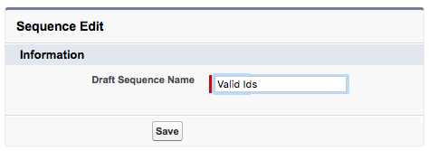

Open the developer console. Create two new Apex classes and name them PrefixSplit and PrefixFilter.
Paste in the following code into the PrefixFilter class and press Save.
global class PrefixFilter extends Abstract.Service {
global class Definition extends Abstract.Service.Definition {
String Tag = 'Tutorial';
String Label = 'Swallows Invalid Prefix';
String Description = 'Tests if the prefix on the event is valid';
String Icon = 'filter';
Integer Limits = 2000;
String Cardinality = 'Fewer';
}
global Map<String, String> Inputs = new Map<String, String>{
'RecordId' => 'STRING : a POTENTIALLY VALID Salesforce prefix.'
};
global Map<String, String> Outputs = new Map<String, String>{
'RecordId' => 'STRING : a VALID 3 character Salesforce prefix.'
};
global override List<Map<String, Object>> execute(Map<String, Object> inputEvent){
// input
String prefix = (String) inputEvent.get('RecordId');
// filter ..
List<Map<String, Object>> outputEvents = new List<Map<String, Object>>();
try {
Id instanceId = + prefix + '0'.repeat(15);
String name = instanceId.getSobjectType().getDescribe().getName();
inputEvent.put('RecordId', prefix + ' - ' + name);
outputEvents.add(inputEvent);
} catch (Exception e) {
// swallow
}
return outputEvents;
}
}
Paste in the following code into the PrefixSplit class and press Save.
global class PrefixSplit extends Abstract.Service {
global class Definition extends Abstract.Service.Definition {
String Tag = 'Tutorial';
String Label = 'Splits Prefixes';
String Description = 'Creates an event for every possible character';
String Icon = 'text_columns';
Integer Limits = 2000;
String Cardinality = 'Many';
}
global Map<String, String> Inputs = new Map<String, String> {
'RecordId' => 'STRING : full (or portion) the Salesforce prefix.'
};
global Map<String, String> Outputs = new Map<String, String> {
'RecordId' => 'STRING : full (or portion) the Salesforce prefix..'
};
global override List<Map<String, Object>> execute(Map<String, Object> inputEvent){
// input
String prefix = (inputEvent.get('RecordId') == null) ?
'' : (String) inputEvent.get('RecordId');
// full implementation should cover 0-9, a-z, A-Z
List<String> prefixes = new List<String>{
prefix + '0' ,
prefix + '1' ,
prefix + '2' ,
prefix + '3' ,
prefix + '4' ,
prefix + '5'
};
// output
List<Map<String, Object>> outputEvents = new List<Map<String, Object>>();
for (String prefix : prefixes) {
outputEvents.add( inputEvent.clone().put('RecordId', prefix) );
}
return outputEvents;
}
}
Once discovery is complete, you will be taken back to the list view. The PrefixSplit and PrefixFilter services should now be listed.
Navigate to the Sequences tab. Create a new sequence called 'Valid Ids' and hit the 'Save' button.

You will be presented with a default sequence containing the Terminate step. Add additional steps to the sequence by tapping the 'New Step' button. From the 'Services' collection, select the following pre-built service components
- WireTap
- Aggregate By Job
- PrefixSplit
- PrefixFilter

Using the drag and drop functionality of the Sequence builder, arrange the service components in the sequence so that they form a logical business flow approximating the arrangement in the diagram below
In the next part of the tutorial, we will fire an initiating event into our sequence.
- The first three steps of the sequence build up all potential combinations of
a Salesforce 3-character prefix.
- The 1st step contributes the first character to the prefix (eg '
0'), - the 2nd step contributes the second character (eg '
00') and - the 3rd step contributes the final character. (eg ('
001')
- The 1st step contributes the first character to the prefix (eg '
- The 4th step in the sequence filters out all invalid combinations produced by the previous three steps effectively forwarding on only valid Salesforce 3-digit prefixes to step five in the sequence.
- The 5th step in the sequence aggregates all valid prefixes into a single list.
- This list is forwarded to the 6th step in the sequence (Wiretap) which emails the list of valid Salesforce Id prefixes to the email account defined on the the Wiretap service.
To execute the sequence, simple press the 'Enqueue Test Event' button. which enqueues a test event into our sequence. You will be presented with a confirmation message approximate which will the following
The top right of the sequence provides a visual indication that the sequence is executing.
Once the sequence has executed in full, browse to your Salesforce email inbox and open the email sent from the Wiretap process. You will be presented with a list of all valid Salesforce Id prefixes that contain the numerals '0' through '5'.